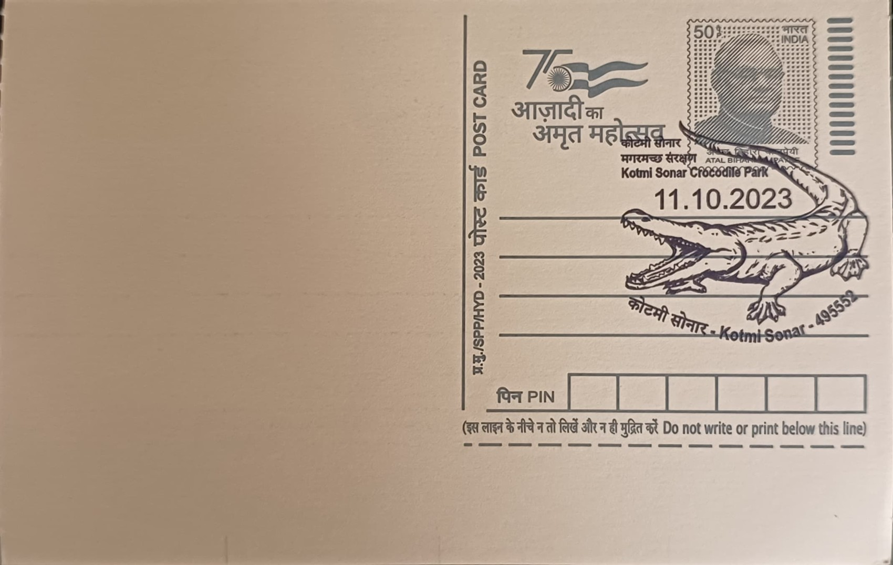

Kotmi Sonar Crocodile Park
कोटमी सोनार मगर पार्क


The name Kotmi Sonar is itself a composite of two older local terms, "Kot" (fort) and "Sonar" (goldsmith), pointing to a settlement history unrelated to its present-day fame; the village's wetlands and ponds became associated with crocodiles only gradually, as generations of residents in this stretch of the Mahanadi basin in Janjgir-Champa district grew accustomed to sharing their water bodies with resident mugger crocodiles rather than driving them out. What distinguishes Kotmi Sonar from other crocodile habitats in Chhattisgarh is not an ancient legend but a modern story of coexistence that eventually drew official recognition, transforming an ordinary village pond system into a named conservation site.
Kotmi Sonar today functions as a notified Crocodile Park, one of the few sites in Chhattisgarh where mugger crocodiles (Crocodylus palustris) live in close, largely peaceful proximity to a human settlement across more than twenty interconnected ponds. Its significance is primarily ecological and conservation-driven rather than religious or historical: the site has become a reference point for human-crocodile coexistence in a state whose river systems, fed by the Mahanadi and its tributaries, still support fragmented and declining mugger populations. The park's standing rests less on scale than on the sustained, documented presence of a breeding population tolerated and even protected by the surrounding community, making it a notable case study for wildlife officials and herpetologists studying the species outside formally fenced sanctuaries.
The area was formally notified as a Crocodile Park by the Chhattisgarh Forest Department in May 2006 and was inaugurated on 23 August 2008, a designation driven largely by decades of informal protection already practiced at the site. Central to that history is Sitaram Das, a sadhu from Uttar Pradesh who settled at Kotmi Sonar's Jogia pond in 1961 after renouncing domestic life, taking up residence at a Rama temple beside the water and gradually becoming the self-appointed guardian of its crocodile population. Over decades he fed, watched over, and defended the muggers from disturbance, effectively functioning as an informal warden long before the Forest Department's notification gave the site legal protected status.
The episode that most sharply defined the park's modern identity, and reportedly hastened its official notification, occurred when Sitaram Das intervened to stop children from harassing an incubating female mugger at her nest; the crocodile, defending her eggs, clamped down on his forearm, and he ultimately lost the limb. Known locally as "Babaji" and later profiled in conservation media as the "Mugger Man," Das's injury and his continued, unbroken commitment to the crocodiles afterward became emblematic of the site's unusual human-wildlife relationship, and his case has since been cited in regional press and conservation writing as a rare instance of sustained voluntary stewardship outside any formal forest-guard structure.
Kotmi Sonar remains under the jurisdiction of the Janjgir forest division, whose officials have periodically had to weigh protection of the notified park's muggers against reports of crocodiles straying into ponds and settlements beyond its boundary, a recurring source of local friction documented in district news coverage. The site has also featured in national conservation publications, including profiles in Sanctuary Asia and Outlook, which used Das's story to illustrate broader themes of mugger crocodile decline and coexistence across India's river systems. Decades after its informal origins, the park continues to be shaped jointly by forest department oversight and the legacy of the lone caretaker whose own body still carries the mark of his long vigil over its crocodiles.
| Date of Introduction | October 11, 2023 |
|---|---|
| Address | Branch Postmaster, |
| Kotmi Sonar BO, | |
| Janjgir-Champa (dt.), Chhattisgarh - 495552. |